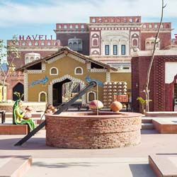

The word Punjab means, “the land of five rivers”. Blessed by the waters of the five rivers, it’s an enormous expanse of fertile land that supplies India with most of her wheat.
Punjab Tourist Places

The word Punjab means, “the land of five rivers”. Blessed by the waters of the five rivers, it’s an enormous expanse of fertile land that supplies India with most of her wheat.